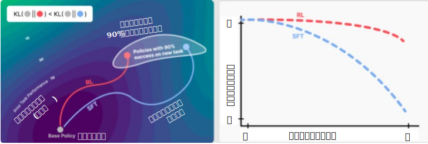

Catastrophic Forgetting (破局的忘却)
最新項目へ
Catastrophic interference in connectionist networks: The sequential learning problem (1989)
コネクショニストネットワークにおける破局的な干渉：順次学習問題
ニューラルネットワークが新しい情報を順次学習する際に生じる破局的干渉 (あるいは忘却) の問題を形式的に定義した基礎的な論文
論文はこちら
Why there are complementary learning systems in the hippocampus and neocortex: insights from the successes and failures of connectionist models of learning and memory (1995)
海馬と新皮質に相補的学習システムが存在する理由：学習と記憶のコネクショニストモデルの成功と失敗から得られた知見
海馬が新しい情報の迅速な学習を可能にし、大脳新皮質が既存の知識への緩やかな統合をサポートするという相補的学習システム理論を提唱した基礎論文。脳がどのように安定性-可塑性ジレンマを解決し、AIにおける中心的な問題である壊滅的忘却を回避するかを説明している。
論文は Google Scholar で検索すると pdf に辿り着ける。
Catastrophic forgetting in connectionist networks (1999)
コネクショニストネットワークにおける破滅的忘却
壊滅的な忘却/干渉に関する非常に影響力のある論文。以前に習得した知識を上書きする現象を概説している。
論文はこちら
Overcoming catastrophic forgetting in neural networks (2017)
ニューラルネットワークにおける壊滅的な忘却の克服
継続学習における正則化ベースの基盤的アプローチであるElastic Weight Consolidation (EWC) を導入した論文。
論文はこちら
要約はこちら
RL's Razor: Why Online Reinforcement Learning Forgets Less (2025)
RLの剃刀: 強化学習の原理: なぜオンライン強化学習は忘却が少ないのか
オンライン強化学習（RL）は、教師ありファインチューニング（SFT）と比較して、言語タスクとロボティクスタスクの両方において、基盤モデルでの壊滅的忘却を常に少なくする。微調整されたポリシーとベースポリシー間の順方向KLダイバージェンスを、新しいタスクで測定された忘却の程度の普遍的な予測因子として特定し、オンラインRLが暗黙的にKL最小ソリューションを追求することを示唆する「RLの剃刀」を提案する。

論文はこちら
要約はこちら
トップに戻る